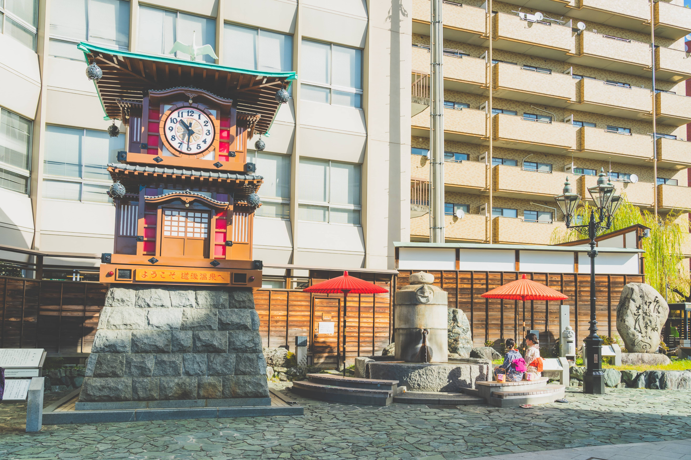

からくり時計
平成6年（1994）の道後温泉本館竣工100周年を記念し、道後温泉本館の振鷺閣をモチーフに作られました。 道後温泉駅で路面列車を降りると目の前に見える、この時計の人気はカラクリ仕掛けです。 定時になると明かりが灯り、太鼓の音とともにせり上がります。夏目漱石の小説「坊っちゃん」の登場人物が中から登場し、物語の世界を繰り広げます。 文字盤からはマドンナ姿の人形が現れ、道後へ来た人々を歓迎する言葉で締めくくります。
平成6年（1994）の道後温泉本館竣工100周年を記念し、道後温泉本館の振鷺閣をモチーフに作られました。 道後温泉駅で路面列車を降りると目の前に見える、この時計の人気はカラクリ仕掛けです。 定時になると明かりが灯り、太鼓の音とともにせり上がります。夏目漱石の小説「坊っちゃん」の登場人物が中から登場し、物語の世界を繰り広げます。 文字盤からはマドンナ姿の人形が現れ、道後へ来た人々を歓迎する言葉で締めくくります。
道後温泉本館南側の冠山にある展望遊歩道。眼下に道後温泉本館の全景が眺められ、道後のまちも一望できるビュースポットです。 東屋、ベンチのほか、源泉掛け流しの足湯があり、くつろぎながら景色が堪能できます。 気軽に足湯に入れるように、更衣ブースもあります。 藤棚のほか、春は桜、夏はアジサイ、秋は紅葉、冬は椿と、四季折々の花や樹木が楽しめる庭も見所の１つ。
中世伊予の豪族･河野氏の湯築城跡を整備した国史跡で、「日本の歴史公園100選」、「日本100名城」に選ばれています。 市街地をパノラマで見渡せる展望台や遊具を備えた広場もあり、家族連れにも人気。 園内を散歩やランニングするのもおすすめです。 出土品の展示資料館や復元された武家屋敷があり、道後界隈の歴史や文化が感じられます。